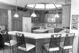
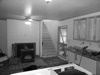
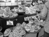
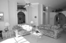
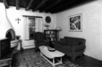
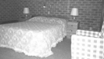
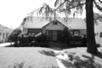
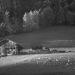
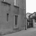
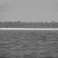

Project 4 / Scene Recognition with Bag of Words
Introduction
The main objective of this project was to get familiar with image recognition, which was done through a combination of different features and classifiers. Two kinds of features were implemented; tiny images and bag of words. These features were used in combination with the 2 implemented classifiers; nearest neighbor classification and support vector machines.
Function "get_tiny_images" Implementation
Tiny images features were very simple to implement. The process consisted of resizing images to a small and fixed resolution, and in this case the chosen size was 16 by 16. The function checked if the image is a color image, and if it is, the image is changed to gray scale. Furthermore, the image is reshaped into a 1 by 256 vector before subtracting the mean from each of its element. After creating feature vectors, they were normalized.
Function "nearest_neighbor_classify" Implementation
The nearest neighbor classifier is one of the simplest classifier to understand and implement. It assigns to the testing data point the same label as the nearest training data point. In some cases k nearest neighbors performs better as it assigns to the testing data the same label as the majority of its k nearest neighbors. However having k greater than 1 did not yield any improvement on the combination tiny images and k nearest neighbors. A couple of values were tested for k, and the results are presented below
| k | Arruracy |
|---|---|
| 1 | 0.203 |
| 2 | 0.203 |
| 3 | 0.203 |
| 4 | 0.199 |
| 5 | 0.201 |
| 6 | 0.201 |
| 7 | 0.202 |
| 8 | 0.203 |
Function "build_vocabulary" Implementation
Tiny images are not very good features, so better features had to be constructed, and in this project the more sophisticated features were bag of words. However, before making these new features, a vocabulary of words had to be constructed. The process consisted of getting dense SIFT descriptors from training images, in our case, about 150000, and perform kmeans clustering to partition the SIFT descriptors into k clusters. The centroids of the obtained clusters form the vocabulary. The code is presented below
function vocab = build_vocabulary( image_paths, vocab_size )
N = size(image_paths,1);
Step = 4;
binSize = 8;
sampled_features = [];
for indx=1:N
img = imread(image_paths{indx,1});
if size(img,3) == 3
img = rgb2gray(img);
end
img = single(double(img));
[~, SIFT_features] = vl_dsift(img, 'Step', Step, 'Size', binSize, 'fast');
dim = size(SIFT_features,2);
if dim > 100
indices = randsample(dim, 100);
sampled_features = [sampled_features SIFT_features(:,indices)];
else
sampled_features = [sampled_features SIFT_features];
end
end
sampled_features = single(sampled_features);
[vocab,~] = vl_kmeans(sampled_features, vocab_size);
vocab = vocab';
end
Function "get_bags_of_sifts" Implementation
This process was simple as well; it consisted of densely sampling many SIFT descriptors from every image and computing the distance between each descriptor and each of the centroids obtained when building the vocabulary. The descriptor is assigned to the cluster from which it is closest. A histogram having the same number of bins as the number of words in the vocabulary counts how many times a descriptor is assigned to a cluster. After every descriptor from the image has been assigned to a bin, the histogram is normalized, and the normalized histogram becomes the vector of features representing the image. All the SIFT descriptors sampling is done at a step size of 4 and bin size of 8. The code is presented below
function image_feats = get_bags_of_sifts(image_paths)
load('vocab.mat')
vocab_size = size(vocab, 1);
N = size(image_paths,1);
Step = 8;
binSize = 8;
image_feats = zeros(N, vocab_size);
for indx=1:N
img = imread(image_paths{indx,1});
if size(img,3) == 3
img = rgb2gray(img);
end
img = single(double(img));
[~, SIFT_features] = vl_dsift(img, 'Step', Step, 'Size', binSize, 'fast');
% Level 0 computation
distances = vl_alldist2(vocab', single(SIFT_features), 'CHI2');
[~,ii] = min(distances, [], 1);
[u, ~, uidx] = unique(ii);
counts = accumarray(uidx,1);
image_feats(indx,u) = image_feats(indx,u) + counts';
end
image_feats = normr(image_feats);
end
When using the combination of bag of words and nearest neighbor, two size vocabulary were used, and the result with different k's is presented in the table below
| k | Arruracy size 200 | Arruracy size 250 |
|---|---|---|
| 1 | 0.499 | 0.506 |
| 2 | 0.499 | 0.506 |
| 3 | 0.499 | 0.506 |
| 4 | 0.515 | 0.514 |
| 5 | 0.507 | 0.509 |
| 6 | 0.515 | 0.517 |
| 7 | 0.511 | 0.511 |
| 8 | 0.519 | 0.517 |
A larger vocabulary improves the performance for lower values of k (i.e. 1,2,3); however, for the higher values of k, its influence on the results fluctuate. There are cases where it improves the behavior and cases where it make it worse. I believe k=4 is a reasonable value as higher values might just lead to overfitting to this specific test data.
Function "svm_classify" Implementation
Nearest neighbor does not yield the best performance possible on these train data and test data. A more porwerful classifier, support vectors machine, was developed in order to improve the results. SVM is a linear classifier that attempt to separate data into two groups by a hyperplane. Since in this case, there are 15 categories, then 15 SVMs had to be trained. The code is presented below
function predicted_categories = svm_classify(train_image_feats, train_labels, test_image_feats)
categories = unique(train_labels);
num_categories = length(categories);
N = size(train_image_feats,1);
d = size(train_image_feats,2);
num_train_data = floor(0.8*N);
indices = randsample(N,N);
train_data = train_image_feats(indices(1:num_train_data),:);
train_data_labels = train_labels(indices(1:num_train_data),1);
hold_data = train_image_feats(indices(num_train_data+1:end),:);
hold_data_labels = train_labels(indices(num_train_data+1:end),1);
W_all = zeros(d,num_categories);
B_all = zeros(1,num_categories);
for indx=1:num_categories
labels = double(strcmp(categories(indx), train_data_labels));
idx = (labels == 0);
labels(idx) = -1;
[W, B] = vl_svmtrain(train_data', labels',0.0009);
W_all(:,indx) = W;
B_all(indx) = B;
end
W_a = [W_all' B_all'];
% hold_data = [hold_data ones(size(hold_data,1),1)]';
% decisions = W_a*hold_data;
% [~, ii] = max(decisions, [], 1);
% predicted = categories(ii,1);
% result = double(strcmp(predicted, hold_data_labels));
% sum(result)/length(result)
% predicted_categories = train_labels;
test_image_feats = [test_image_feats ones(size(test_image_feats,1),1)]';
decisions = W_a*test_image_feats;
[~, ii] = max(decisions, [], 1);
predicted_categories = categories(ii,1);
end
Some part of the code is commented out because it was used to tune the parameter lambda. The training data was split in two part; 80% were used for training purposes, and 20% was held out for testing purposes until a good parameter of lambda was found. At every iteration, the split was done randomly so that the parameter wouldn't result from overfitting the held out set. The value of lambda that was judged to yield the best performance was around 0.0009.
After lambda was tuned, performance was tested on vocabulary of size 200 and 250. Instead of using the fixed test/train split provided by the starter code, 500 training examples and 100 testing examples were randomly sample from the provided data to test performance, and this was done 6 times to ensure that the classifier was really working properly and not overfitting one set of examples. In the case of 200 words vocabulary, the average accuracy was 0.622 with a standard deviation of 0.023. On the other hand, the case of 250 words vocabulary lead to an average accuracy of 0.612 with a standard deviation of 0.018. The data are shown in the table below
| Arruracy size 200 | Arruracy size 250 |
|---|---|
| 0.660 | 0.610 |
| 0.616 | 0.580 |
| 0.648 | 0.630 |
| 0.610 | 0.620 |
| 0.600 | 0.630 |
| 0.600 | 0.600 |
Performance slightly decreased with a bigger vocabulary; not being 100% sure on why this is the case, it is suspected that if lambda is tunned a little bit more, the bigger vocabulary will yield better results. Since performance was not improved by increasing the vocabulary size, another improvement angle was explored, and it consisted of using spatial information. A 3 level spatial pyramid was implemented in the attempt to improve the data, and it indeed resulted in a huge improvement. Since adding spatial information made the program run much longer. Only one iteration was tried, and the obtained result was an accuracy of 0.706
Scene classification results visualization
Accuracy (mean of diagonal of confusion matrix) is 0.706
| Category name | Accuracy | Sample training images | Sample true positives | False positives with true label | False negatives with wrong predicted label | ||||
|---|---|---|---|---|---|---|---|---|---|
| Kitchen | 0.560 |  |
 |  |
InsideCity |
 Industrial |
 LivingRoom |
Industrial |
|
| Store | 0.650 |  |
 |
 |  Office |
 InsideCity |
 Kitchen |
 LivingRoom |
|
| Bedroom | 0.350 |  |
 InsideCity |
 Industrial |
 Mountain |
 TallBuilding |
|||
| LivingRoom | 0.500 |  |  |
 |
 |
 Bedroom |
 Bedroom |
 Office |
 Kitchen |
| Office | 0.860 |  |
 |
 Industrial |
 Kitchen |
Bedroom |
 Suburb |
||
| Industrial | 0.410 |  |
 Bedroom |
 TallBuilding |
Store |
Highway |
|||
| Suburb | 0.950 |  |  |
 |
 Industrial |
 OpenCountry |
 LivingRoom |
 Coast |
|
| InsideCity | 0.800 |  |
 |
 |
 Kitchen |
 Store |
 TallBuilding |
 Suburb |
|
| TallBuilding | 0.750 |  |
 |
 Store |
 Industrial |
 Coast |
 OpenCountry |
||
| Street | 0.880 |  |
 |
 Bedroom |
 Mountain |
 TallBuilding |
 InsideCity |
||
| Highway | 0.810 |  |
 |
 |
 Coast |
OpenCountry |
 Coast |
 Office |
|
| OpenCountry | 0.560 |  |
 |
 |
 Coast |
Coast |
 TallBuilding |
TallBuilding |
|
| Coast | 0.770 |  |
 |
 |  Highway |
 TallBuilding |
 Bedroom |
 OpenCountry |
|
| Mountain | 0.810 |  |
 |
 |
 |
 Store |
Forest |
Office |
Coast |
| Forest | 0.930 |  |
 |
 OpenCountry |
 Store |
 Mountain |
Mountain |
||
| Category name | Accuracy | Sample training images | Sample true positives | False positives with true label | False negatives with wrong predicted label | ||||